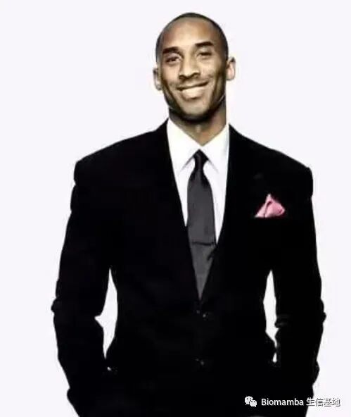
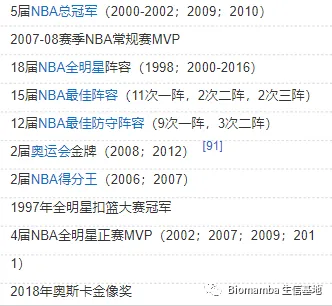
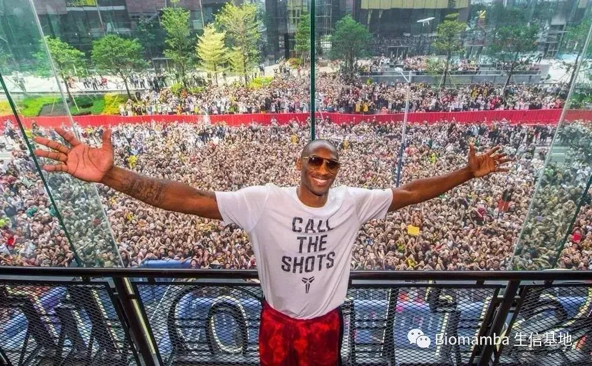
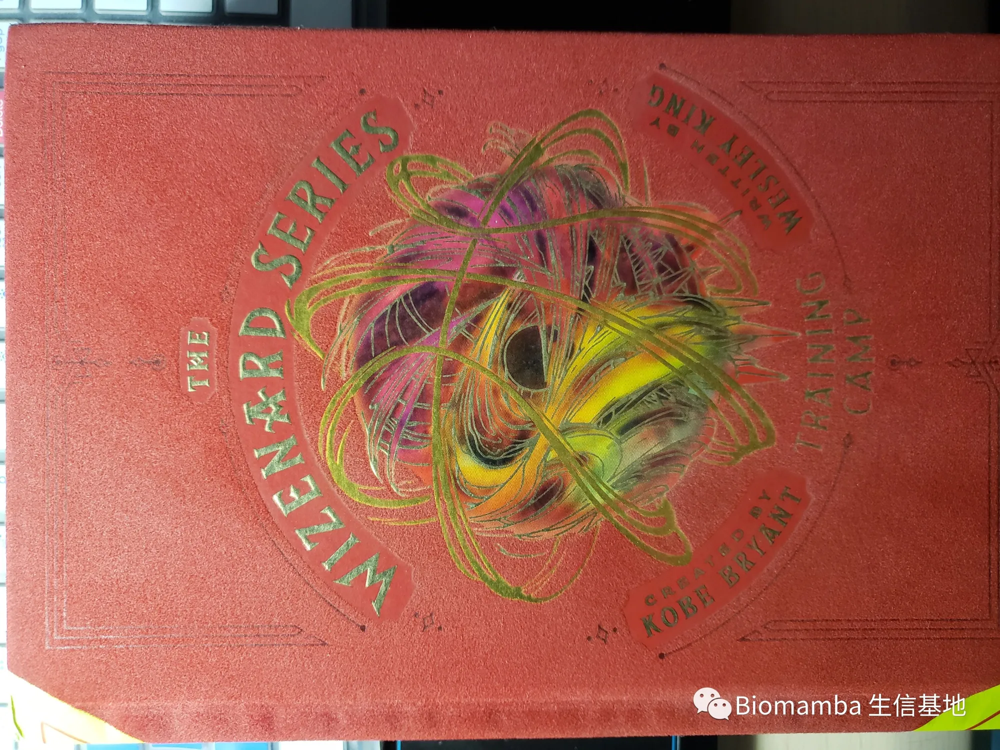
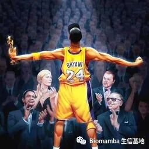

答读者问（七）有人问我Biomamba何解
原文：https://mp.weixin.qq.com/s?__biz=MzAwMzIzOTk5OQ==&mid=2247484550&idx=1&sn=ec4466084c1c9eba7eb292e95f33b5bb&chksm=9b3f7dd6ac48f4c042b4e9df2abd717b1354b4914c3f7510eaf444e97965a0f6622979e710e0#rd 合集：答读者问
往期回顾：
答读者问 （五）如何实现各物种基因的ID/symbol的转换
讲道理，这又是一篇非技术帖。之前有些朋友问我为何使用Biomamba作为公众号以及我个人的网名，在这里，请允许我做一个简单的回答。
Biomamba
Bio无需多言，一开口就是老前缀了。不知道我的公众号用户里有多少篮球用户，给大家全须全尾的说道说道。black mamba(黑曼巴)原为非洲最大的毒蛇，成年蛇体长可达3m，是非洲毒蛇中体型最长、速度最快、攻击性最强的种类[1]。NBA球星科比布莱恩特(Kobe Bryant)（不会吧不会吧，不会真有人没听过这个名字吧）也因此常自诩为black mamba，因此世人常以黑曼巴称之。

** **
Kobe
** **
** **
** **
** **

01
科比出生于1978年8月23日，美国著名篮球运动员，于1996年被湖人队签下，年仅十七岁的他便踏入残酷的NBA商业联盟，在球场上与成年人们同场竞技。他灿烂的篮球生涯延续至2016年。二十年间收获的主要荣誉有→→→→→→→→→→→→→→→→


可能圈外的用户不太了解，其中每一项都足以震古烁今（奥运会奖牌除外），其余数据上的记录及荣誉不胜枚举。其以精湛的技巧、迅捷的步伐、华丽的动作、坚忍的斗志收获了大量的粉丝。由于其粉丝数量巨大，业界也常戏称其粉丝群体为“60亿”。上图为科比中国行与粉丝的合影。
随便放一个集锦意思一下吧那就。
说到这里，大家也应当明白，这个号名称来由最大的原因就是：我是个科比人柱力。当然，抛开篮球因素外，我的出发点主要是其执着、好斗的精神、对于热爱的忠诚以及其充满智慧的人生观（当然也就叫做曼巴精神）。我们通过这个“高中生毕业生”说过的话来了解一下： Someone has to win, why not be me? When you want to give up, think about what made you insist on coming here. Second means you are the number one loser. I know the appearance of Losangeles at four in the morning. Failure is more painful than death.
Love me or hate me, both must have one. All the time. Hate my game, my ....... Hate it, hate it with all your thoughts. But there are many people who love me, and the reason is the same as those who hate me. If you are afraid of failure, you will fail.
在16年退役的那一天，坐在最后一排上高数课的我看完了他人生中的最后一场比赛，我以为他的那句“mamba out”，会带走我的青春。但是他走之前还留下了这么一句话“如果在我退役二十年之后，我最大的成就还是篮球，那么我就是失败的”。事实上，还未到二十年，他就已经兑现了自己的诺言：在17年发布了他制作的动画短片《亲爱的篮球之后》，该作品迅速的在第二年的3月5日获得了第90届奥斯卡的“最佳动画短片奖”（这是什么成就不用说了吧，小李子22年陪跑冠军直呼内行）。

不仅如此，这个高中生退休后还开始写书了，其作品巫兹纳德系列也荣登北美畅销书籍的榜首，目前有两部，我有其中的《巫兹纳德：训练营》。看，他真的做到了，他对胜利的追求不止于篮球。
02
所以说，mamba在更多的情况
下是一个代词，通常指业界翘楚，继科比之后NBA的各种绝活哥也通常被称为各种曼巴。回到最初的问题，mamba是我个人的图腾，让我时刻告诉自己做事需要笃定、专注、坚持。那么，Biomamba连在一起便是本公众号的主旨——努力成为生物行业中的优质公众号。我也希望这个号能够二十年如一日的更下去（只有拖更，没有断更）。
斯人已逝，遗忘才是终点！

参考：[1]https://baike.sogou.com/v59089199.htm?fromTitle=%E6%9B%BC%E5%B7%B4%E8%9B%87[2]https://baike.baidu.com/item/%E7%A7%91%E6%AF%94%C2%B7%E5%B8%83%E8%8E%B1%E6%81%A9%E7%89%B9/318773?fromtitle=%E7%A7%91%E6%AF%94&fromid=133066&fr=aladdin